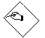
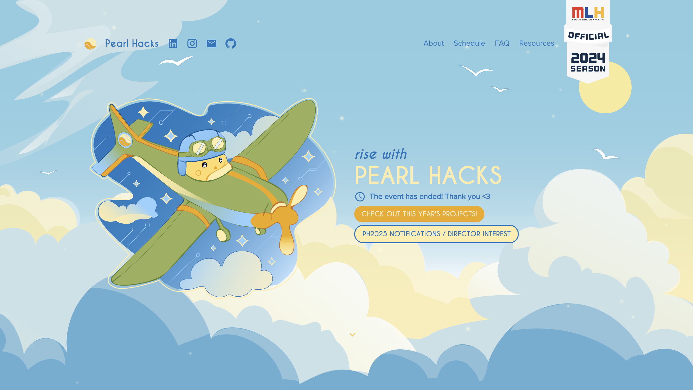
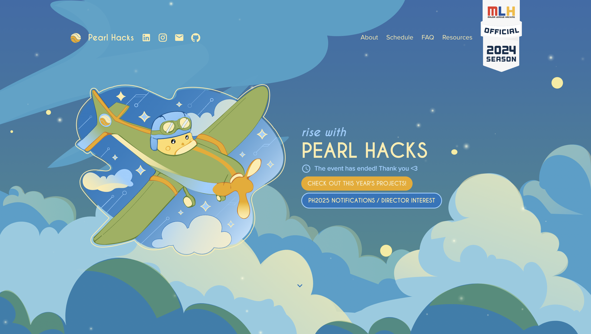
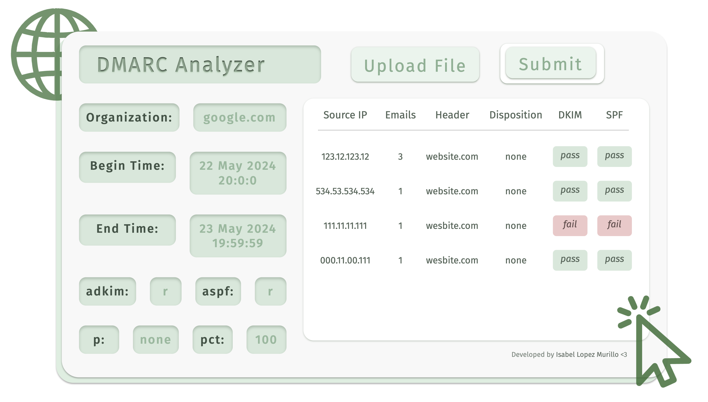
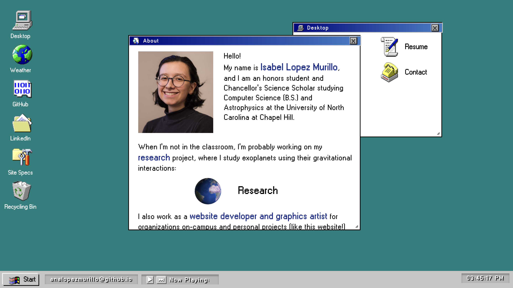
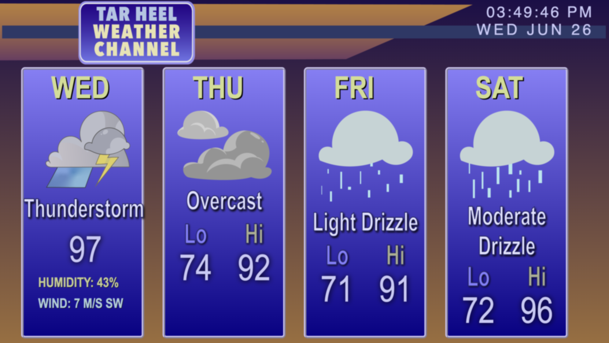

Desktop
X
About
X
Hello!
My name is Isabel Lopez Murillo, and I am an honors student and Chancellor's Science Scholar studying Computer Science (B.S.) and Astrophysics at the University of North Carolina at Chapel Hill.
When I'm not in the classroom, I'm probably working on my research project, where I study exoplanets using their gravitational interactions:

Research
I also work as a website developer and graphics artist for organizations on-campus and personal projects (like this website!)

Projects
You can also find my professional and technical experience outlined in my resume!

Resume
Let's get in touch! Feel free to contact me at my email anaisabellopez2021@gmail.com, or using the link below:

Contact
Research
X
Research
As an undergraduate researcher in the Young Worlds Lab led by Dr. Andrew Mann at UNC-Chapel Hill, I lead my own research project studying transit timing variations (TTVs) of exoplanets in young star systems.
An exoplanet, or extrasolar planet, is a planet outside our Solar System revolving around a star other than our Sun. The hunt for exoplanets has been a topic of interest in Astronomy and Physics research for decades, helping contribute to the ongoing search for extraterrestrial life and questions about the formation of our Earth.
To find an exoplanet, we observe the amount of light visible from a star over time, resulting in a graph called a lightcurve. A dip in the light of this graph can be the indication of an exoplanet, and can tell us about the planet's period, radius, distance from its star, etc.

Mass measurements for young exoplanets are highly valued in astronomy research, but not feasible using current detection methods. Transit timing variations, or TTVs, offer an alternate route to finding these measurements. By studying the gravitational interactions between exoplanets in a system, we can glean information about their mass ratios and eccentricity.
My research focuses on conducting a survey of TTVs in young planetary systems with the intent of finding planets viable for mass measurement follow-up. We survey 59 planets orbiting 40 systems using data from Kepler, K2, and TESS. We recover TTVs present in previously reported systems like AU Mic, and report the discovery of TTVs in systems such as HIP-67522 and TOI-1224.
To fit transits, we use the BATMAN Python package in conjunction with a Gaussian Process (GP) implemented in celerite2 using a simple harmonic oscillator (SHO) kernel to fit the out of transit variation. Results are calculated by recording the observed time of transit midpoint (t0) vs. expected by calculation using the planetary period (Observed - Calculated metric). TTVs are quantified using a reduced chi-squared metric.
We are currently working through our survey of planets, and are simultaneously writing a paper with our results. I have had the opportunity to contribute to TTV analyses for exoplanet discovery papers published in The Astronomical Journal and Nature such as Thao et. al 2024 for TOI-1224 c and Barber et. al 2024 for TOI-6963 (in publishing stage), and have presented my findings thus far at the Celebration of Undergraduate Research at UNC-Chapel Hill, as well as the Chancellor's Science Scholars Undergraduate Research Symposium.
Projects
X
Projects
UNC-CSXL Friendship System
Role: Full Stack Development, Graphic Design
Angular, TypeScript, HTML/CSS, Python, FastAPI, SQLAlchemy, Docker
Completed during the CSXL Internship at UNC, as part of COMP 590: Foundations of Software Engineering. The scope of the project was to design an add-on to the Computer Science Experience Lab (CSXL) web application.
We worked on an instance of the live codebase of the CSXL website. Our team engineered a Friendship System addition to the program, allowing users to send friend requests to each other and see when their friends are "online", or checked in to the CSXL.
iGEM Wikis
Role: Project Management, Front End Development, Graphic Design
HTML/CSS, Flask, Javascript
Developed for UNC's iGEM team. iGEM, or International Genetically Engineered Machine, is a yearly competition for collegiate teams to engineer a solution to a problem using synthetic biology. Every year, one of the deliverables is a developed website detailing the project in full detail. I have had the chance to lead Wiki development since the inception of UNC's iGEM team in 2022.
Our 2023 project focused on creating a sense and treat system to eliminate P. aeruginosa infections in skin wounds. The website design was focused on

2023 Pearl Hacks Website
Role: Graphic Design, Illustration
Adobe Illustrator, Figma
Developed for Pearl Hacks, a UNC student run/led organization bringing a beginner-friendly hackathon for women and gender non-conforming students in the UNC-Chapel Hill area.
As Director of Design, I lead development on Pearl Hacks' art direction, illustrations, promotional materials, and graphic design. Graphics were illustrated using Adobe Illustrator and Figma.


DMARC Analyzer
Solo Project
HTML/CSS, JavaScript
Web application developed to help business owners parse DMARC aggregate reports returned from setting up SPF/DKIM/DMARC frameworks on their web hosts. Pulls information from XML aggregate reports and returns information to user in an interactive and easy to digest format for users not as familiar with email authentication protocol.
This application runs on static memory only and does not log user or XML file information. You can find the GitHub repository for this project here.

Personal Website
Solo Project
HTML/CSS, Javascript
This website! This is a personal project I completed in a few months during summer 2024 while preparing to apply to graduate school and industry jobs. This site uses pure HTML/CSS and both custom JavaScript as well as jQuery for movement functionality. I wanted to work on a project that encapsulates both my personality and my love for 90s style interfaces and graphic design in a readable and fun-to-use personal website portfolio. The design and interface were modeled after the Windows 98 operating system, and all tab/footer design and stylization was done using custom CSS. 
90s Weather App
Solo Project
HTML/CSS, Express, JavaScript
Developed as an optional assignment for COMP 426: Modern Web Programming. This web application uses client-side Javascript to fetch and inject live weather information for the UNC-Chapel Hill area. You can view the weather tab by double-clicking the "Weather" desktop icon in this website! You can also find the GitHub repository for this project here. 
Site Specs
X
Site Specifications
This website was developed by Ana Isabel Lopez Murillo and is hosted under a
CC BY-NC-ND 4.0 license.
You can find the repository used to create this website here.
Music used:
Attitude - Luxury Elite
Second Floor - 猫 シ Corp.
Slice of Paradise - Karl Casey
Windows 98 icons provided by Alex Meub
Gifs provided by GifCities of the Internet Archive.
Weather
X
Recycling Bin
X